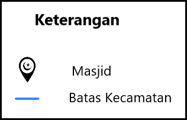
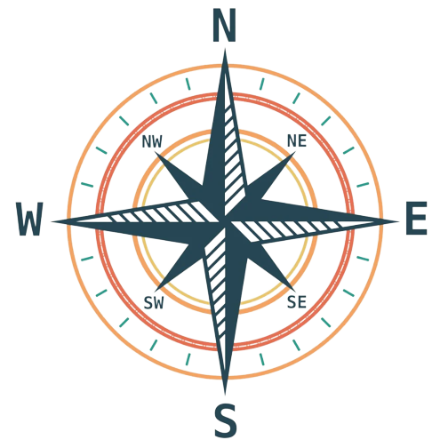

<html>
    <head>
	
	<!--sisipkan kode pemuatan disini -->
	<link rel="stylesheet" href="leaflet/leaflet.css"/>
	<script src="leaflet/leaflet.js"></script>
	
	<link rel="stylesheet" href="leaflet/leaflet.groupedlayercontrol.css"/> 
	<script src="leaflet/leaflet.groupedlayercontrol.js"></script>
	
	<link rel="stylesheet" href="Control.Geocoder.css" />
	<script src="Control.Geocoder.js"></script>
	
	<link rel="stylesheet" href="leaflet/leaflet-ruler.css"/> 
	<script src="leaflet/leaflet-ruler.js"></script>
	
	<link rel="stylesheet" href="leaflet/leaflet-ruler.css"/> 
	<script src="leaflet/leaflet-ruler.js"></script>
	
	<link rel="stylesheet" href="leaflet/L.Control.MousePosition.css"/> 
	<script src="leaflet/L.Control.MousePosition.js"></script>

	<link rel="stylesheet" href="leaflet/Control.MiniMap.css"/> 
	<script src="leaflet/Control.MiniMap.js"></script>
	
	<link rel="stylesheet" href="leaflet/leaflet-compass.css"/> 
	<script src="leaflet/leaflet-compass.js"></script>
	
	<link rel="stylesheet" href="leaflet/leaflet.legend.css"/> 
	<script src="leaflet/leaflet.legend.js"></script>
	
	 <link rel="stylesheet" href="./aaaa_files/leaflet.css">
    <script src="./aaaa_files/leaflet.js.unduhan"></script>

    <link rel="stylesheet" href="./aaaa_files/leaflet.legend.css">
    <script type="text/javascript" src="./aaaa_files/leaflet.legend.js.unduhan"></script>

	
    </head>
	<body>
<!-- peta akan ditampilkan disini -->
         <div style="height:650px" id="mapid"></div>
    </body>
	
	<script src="Kendari.js"></script>
	
	<script>
	var mymap = L.map('mapid').setView([-3.998460, 122.512974], 13);
	
	var GoogleMaps = new L.TileLayer('https://mt1.google.com/vt/lyrs=m&x={x}&y={y}&z={z}', { 
     opacity: 1.0, attribution: 'Ketrampilan Berkehidupan dan WEBSIG UMS'
	}).addTo(mymap);
	var GoogleSatelliteHybrid = L.tileLayer('https://mt1.google.com/vt/lyrs=y&x={x}&y={y}&z={z}', { 
     maxZoom: 22, 
     attribution: 'Ketrampilan Berkehidupan dan WEBSIG UMS' 
	});

	var baseLayers = {
     'Google Satellite Hybrid': GoogleSatelliteHybrid,
     'Google Maps': GoogleMaps,
	}; 

	L.control.groupedLayers(baseLayers).addTo(mymap);
	var polyg2 = L.geoJson(polygons.features).addTo(mymap);
	
	var marker = L.marker([-3.977933, 122.544609]).addTo(mymap);
	marker.bindPopup("<b>Informasi</b><br>Masjid Al-Alam");
	var marker = L.marker([-3.966093, 122.516754]).addTo(mymap);
	marker.bindPopup("<b>Informasi</b><br>Masjid Al-Kautsar");
	var marker = L.marker([-3.971668, 122.586876]).addTo(mymap);
	marker.bindPopup("<b>Informasi</b><br>Masjid Raya Kendari");
	var marker = L.marker([-3.966986, 122.565272]).addTo(mymap);
	marker.bindPopup("<b>Informasi</b><br>Masjid Jami' Al Akbar Kendari i");
	var marker = L.marker([-3.975703, 122.523191]).addTo(mymap);
	marker.bindPopup("<b>Informasi</b><br>Masjid Raudhatul Jannah");
	var marker = L.marker([-3.975599, 122.512297]).addTo(mymap);
	marker.bindPopup("<b>Informasi</b><br>Masjid Al-Ikhlas");
	var marker = L.marker([-3.966986, 122.565272]).addTo(mymap);	
	marker.bindPopup("<b>Informasi</b><br>Masjid Al-Ikhlas");
	var marker = L.marker([-4.007946, 122.517624]).addTo(mymap);	
	marker.bindPopup("<b>Informasi</b><br>Masjid Abu Bakar Ash-Shiddiq");
	var marker = L.marker([-3.956908, 122.507099]).addTo(mymap);	
	marker.bindPopup("<b>Informasi</b><br>Masjid Al-Aydrus");	
	var marker = L.marker([-3.969608, 122.587900]).addTo(mymap);	
	marker.bindPopup("<b>Informasi</b><br>Masjid Muhajirin");
	var marker = L.marker([-4.014213, 122.532870]).addTo(mymap);	
	marker.bindPopup("<b>Informasi</b><br>Masjid Ar-Rahman");
	var marker = L.marker([-4.023529, 122.530474]).addTo(mymap);	
	marker.bindPopup("<b>Informasi</b><br>Masjid SMA Negeri 10 Kendari");

	L.Control.geocoder().addTo(mymap);
	L.control.ruler().addTo(mymap);

	// menambahkan scale bar
	L.control.scale({
	position: 'bottomleft', 
	maxWidth: 200, 
	imperial: false
	}).addTo(mymap);
	
	// menambahkan informasi koordinatmouse dalam GCS
	L.control.mousePosition({
	position: 'bottomleft',
	prefix: 'koordinat'
	}).addTo(mymap);
	
	// menambahkan informasi minimap
	var osmUrl='http://{s}.tile.openstreetmap.org/{z}/{x}/{y}.png';
	var osmAttrib='Map data &copy; OpenStreetMap contributors';
	var osm = new L.TileLayer(osmUrl, {minZoom: 5, maxZoom: 18, attribution: osmAttrib});
	
	//Psdfsdftwo map controls
	var osm2 = new L.TileLayer(osmUrl, {minZoom: 0, maxZoom: 13, attribution: osmAttrib });
	var miniMap = new L.Control.MiniMap(osm2, {position: "bottomright", toggleDisplay: true }).addTo(mymap);
	
	// menambahkan informasi north arrow
	var north = L.control({position: "bottomleft"});
	north.onAdd = function(mymap) {
    var div = L.DomUtil.create("div", "info legend");
    div.innerHTML = '';
    return div;
	}
	north.addTo(mymap);
	
	// menambahkan informasi north arrow
	var north = L.control({position: "topright"});
	north.onAdd = function(mymap) {
    var div = L.DomUtil.create("div", "info legend");
    div.innerHTML = '';
    return div;
	}
	north.addTo(mymap);
	

	
	
	
	
	
	
	
	</script>
	
</html>